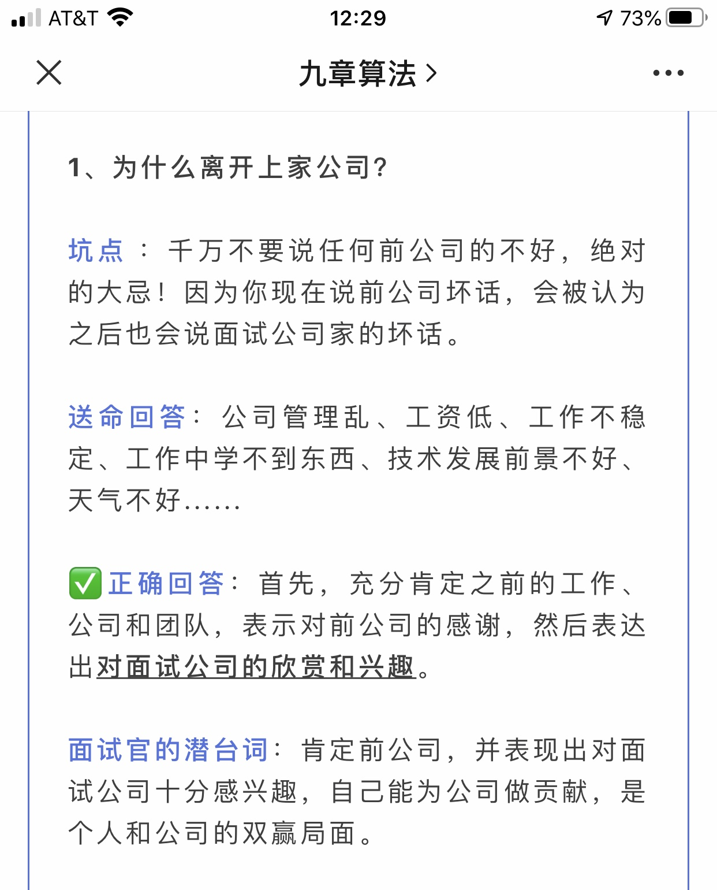
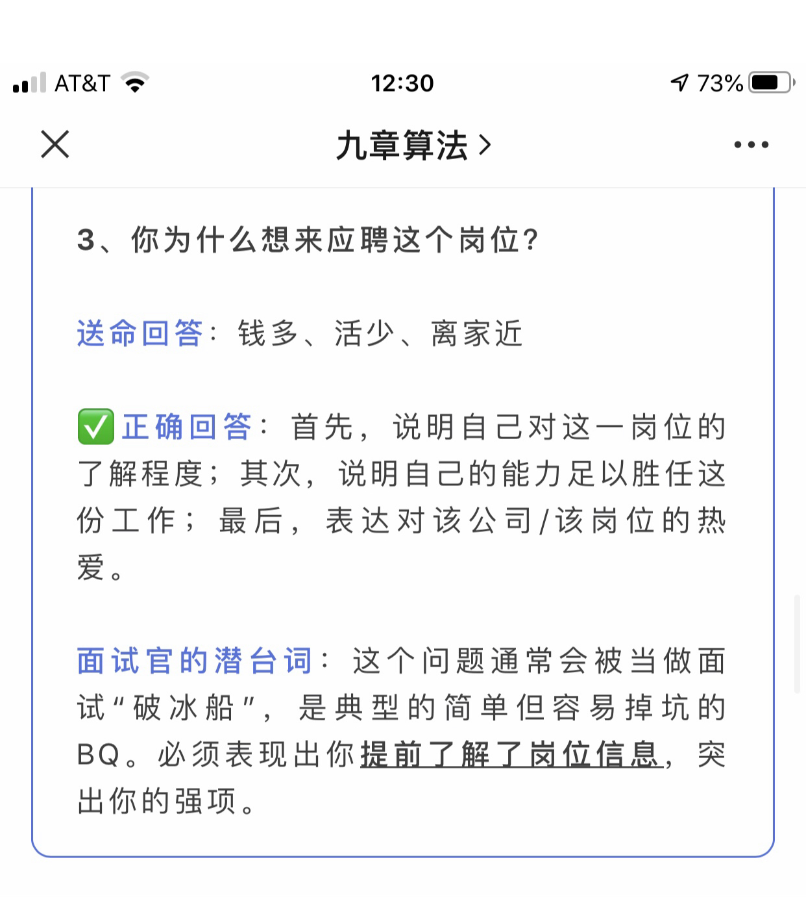
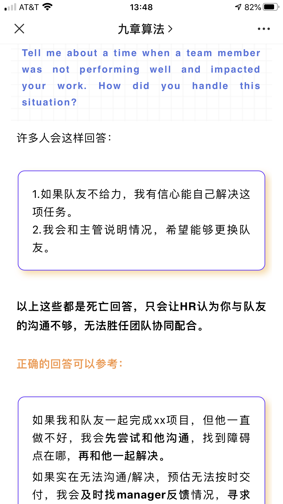
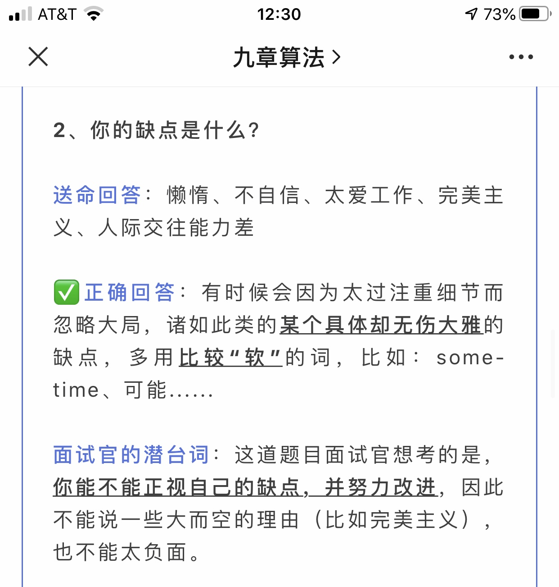

Why left previous company
1. 上家公司好，have learned a lot, has grown a lot.
2. Interested in this company.

Why this position?
1. 职位理解
2. 如何胜任
3. 如何感兴趣


1. 答题思路 (STAR） Situation, task, action, result.
例子
1. unclear responsibility
2. 做一件本不该你做的事情，同一个项目 : 自己做的东西依赖于其他组的library, 他们没时间改, 我帮他们做好了，让他们code review.
3. proudest project.
4. Disagree with someone最后别人改了. ( QA code review).. QA后来改了吗？
5. Disagree 最后你改了
6. 答应别人但没做的人
8. 在Elekta做的工作 : 见首页工作总结
9.一个项目在deadline里面没有做完，如何解决的。 你是如何知道做不完的，谁决定的 ：
这个题目的三个点是 1. notify manager immediately 2. Bring up the reason why you can't finish on time 3. Trade off(可以做些其他简单的东西）
Follow up 问题可能是，最后学到了什么? Plan的时候要think of big picture.
I would notify my manager immediately and tell my manager why I can't finish on time. Normally the reason is we just realized we need to implement an unplaned module/dependency that
takes additional time. I would also ask instead getting this in, can I get a small feature in? And I would recall the design meeting, why we didn't take this dependency into
consideration, to learn from past help us perform better in the future.
10.一个项目在deadline里做完了。
11. Conflict with coworker.
自己做的项目，对别的组的code有一点dependency, 发邮件问能不能改一下library, 不会邮件，礼貌的问了说是自己有deadline to meet, 没有时间做我的。 解决方法是问他能不能一起去问manager,
然后我解释给manager听，说我的deadline要到了，需要他修改一点代码。 老板想了下决定把他的一些活给了另外一个人，让他有时间做这个事情。 最后我在deadline之内完成了这个项目。
12. 如果有多项紧急的任务同时给你，你会如何处理？
Prioritize task by following criteria
How ergent this task is?
How hard it is/How much time it takes?
Does it need cooperration between mutilpe person/team?
不是很熟悉的问题不要乱编:
7。解决的一个复杂的问题， multithreding, 问用了多少个CPU,用了哪些函数，如何实现同步的，是怎么做的 。 （乱编的例子没想到会一直问细节, 问怎么做的，问用了哪些函数, 用了什么语言， 被带到沟里去了）
大的方向